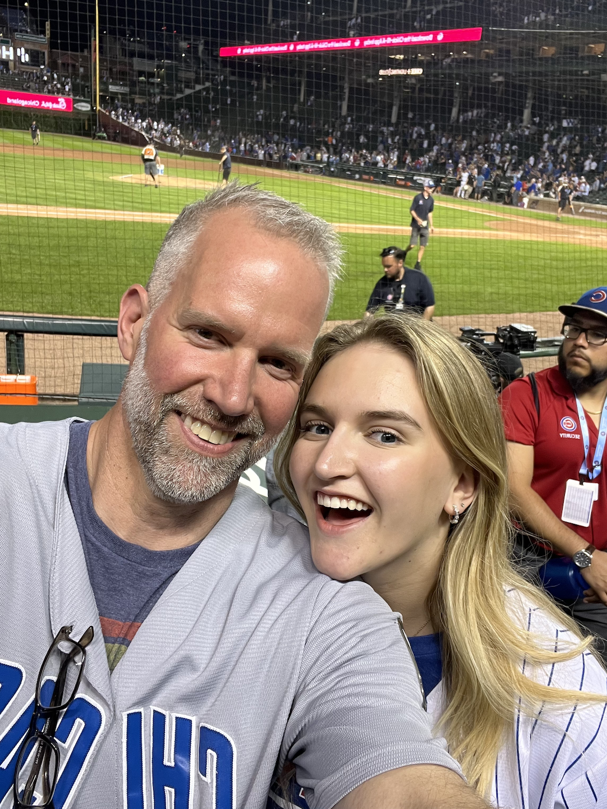

Since before I was born, I have been immersed in Chicago Cubs baseball. The story goes that my dad even tried to name me Fukodome, the right fielder at the time, before my mom vetoed that. Growing up, my dad took me to countless games and I fell head over heels for the beautiful game.
I chose these pictures to show the journey from my intro in baseball all the way to obtaining an internship with Marquee Sports Network, the television home of Cubs baseball.
The first time my dad taught me how to play baseball.
This was one of the many games my dad took me to at the historic Wrigley Field. The Cubs shut out the Dodgers in a 1-0 victory.

This game was one of my favorite memories with my dad. It was my big present for my 18th birthday. We sat directly behind the Brewers bullpen and watched the Cubs walk it off.
The summer after my freshman year I earned an internship with Marquee Sports Network, the television home of the Cubs, in the programming department. It shows how I morphed from a Cubs fan all the way to working in the industry.
One of my proudest accomplishments to this day was when I got to sideline report for the team. I shadowed Taylor McGregor and created my own report Reaching this stage full-time is the ultimate dream, and I wouldn't be here without my dad introducing me to baseball and his endless support.